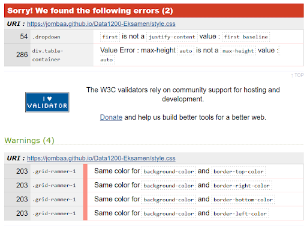
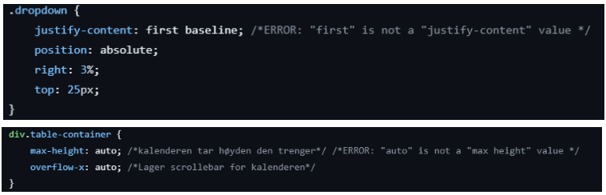

DATA1200: Accessibility
WAVE - Automatisk test
Det er viktig å sørge for at alle brukere, uavhengig av funksjonshemninger, har en jevn, meningsfull og likeverdig opplevelse når de besøker nettsider. En viktig ressurs i denne prosessen er WAVE (Web Accessibility Evaluation Tool). WAVE er et kraftig verktøy for automatisk testing av nettsiders tilgjengelighet som gir innsikt og veiledning for å avdekke og løse tilgjengelighetsproblemer på en nettside.
Resultater: Ingen feil ble oppdaget. Manuell testing er fortsatt nødvendig for å sikre samsvar og optimal tilgjengelighet. Det var kun en bemerkning om at vi hadde hoppet over et heading nivå, dette har vi korrigert. På en tidligere test fikk vi også noen bemerkninger om noen div elementer som manglet end tags og en div inne i et H3 element.
Manuelle tester
For testing av kontraster valgte vi å benytte WebAIM. Dette verktøyet har hjulpet oss med å sikre at tekst og grafikk på nettstedet oppfyller de nødvendige kontraststandardene, og dermed bidrar til en mer tilgjengelig og brukervennlig opplevelse for alle våre besøkende.

Kontrasttesten i WebAIM har vist svært positive resultater. Den bekrefter at tekst og annet innhold på nettstedet har tilstrekkelig kontrast mot bakgrunnen, noe som forbedrer lesbarheten og tilgjengeligheten. Dette er et viktig skritt for å sikre at alle brukere, inkludert de med nedsatt syn, kan få en mer komfortabel og effektiv opplevelse på nettstedet.
Responsivt design
Vi har aktivt testet det responsive designet på nettsiden ved å justere størrelsen på nettleseren. Dette har tillatt oss å identifisere og løse eventuelle layout- og brukervennlighetsutfordringer på forskjellige skjermstørrelser og enheter. Vårt mål har vært å sikre en jevn og optimal opplevelse for alle besøkende, uavhengig av hvilken enhet de bruker for å besøke nettstedet vårt.
HTML- og CSS-validatortester
Vi brukte HTML-validatoren (https://validator.w3.org/) for å finne feil og for å få ryddet opp i unødvendig kode. Her fant vi ulike former for feil som for eksempel:
- Vi hadde et par unødvendige skråstreker
- Feilmeldinger på attributter
- Navn på bilder kunne ikke inneholde mellomrom
- Elementer som ikke var lukket
- Unøyaktig bruk av headere som H1 og H3.
Vi brukte CSS-validatoren (https://jigsaw.w3.org/css-validator/) for å sjekke at CSS-koden er gyldig og riktig strukturert. Disse feilmeldingene har vi rettet opp i og fjernet fra koden da de ikke gjorde noe:
 Brukertest
Selv om tidsbegrensninger hindret oss i å gjennomføre brukertesting med kandidater med funksjonsnedsettelser, er bevisstheten om viktigheten av tilgjengelighet økt. Vi forplikter oss til å inkludere slik testing i fremtidige revisjoner og forbedringer av nettstedet for å sikre en inkluderende opplevelse for alle brukere.